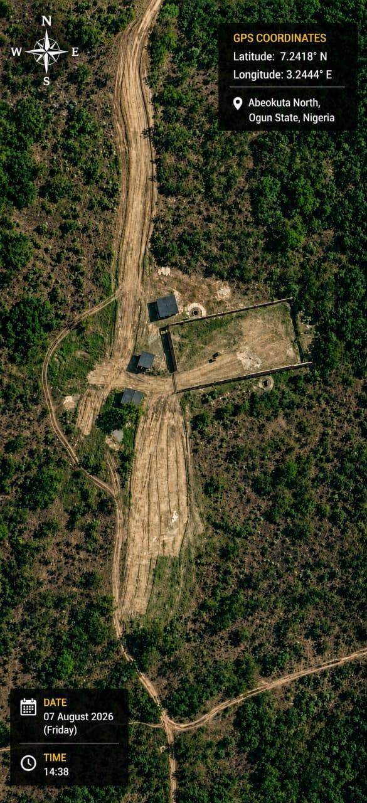

The Project
A phased agro-industrial development in Abeokuta
From cassava harvest to industrial value
The Aligo Energies Cassava Refinery Complex is a phased development designed to convert cassava into industrial raw materials for food, manufacturing, pharmaceutical and renewable energy industries.
Situated within Nigeria's major cassava-producing belt in Abúlé Àrè, Alamala, Abeokuta, the project is positioned to maximise raw material availability while reducing logistics costs.
Discuss the project

Development roadmap
A phased path to full-scale refining
Industrial dried cassava chips facility
The foundation phase sets up a standardised supply of industrial-grade dried cassava chips for ethanol producers, animal-feed manufacturers and export markets.
Designed capacity
220 MT of fresh cassava daily
Approximately 16,200 MT annual production
Target markets
Ethanol producersAnimal-feed manufacturersExport marketsExpansion into higher-value derivatives
Building on Phase One's infrastructure and operating experience, the next stage widens the product range into more industrial and export opportunities.
Industrial ethanolCassava starchGlucose syrupCassava flourAcetoneButanolPhase Two is a future expansion stage. Product mix, timing and capacity depend on project development and investment decisions.
Project highlights
Designed for the realities of local production
Strategic location
Within the Ogun–Oyo cassava belt, close to raw materials and with lower logistics costs.
Energy-efficient operations
CNG-powered operations help manage energy use, emissions and processing costs.
Direct OEM equipment sourcing
Industrial equipment bought directly from original manufacturers.
Scalable infrastructure
A phased plan that grows from dried chips into a wider range of derivatives.
Strong farmer integration
Structured supply links with cassava farmers in the Ogun–Oyo belt.
Market and supply network
How product moves from farm to buyer

Interested in the project?
Talk with Aligo Energies about investment, partnerships, supply opportunities or other enquiries.
Start a conversation